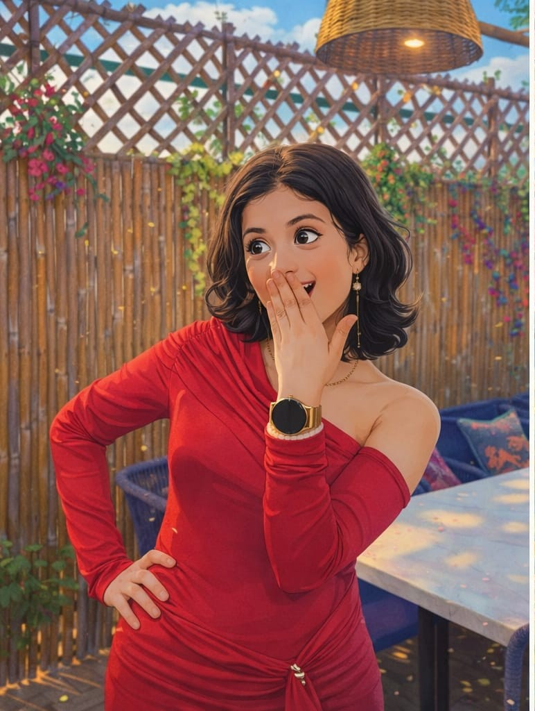
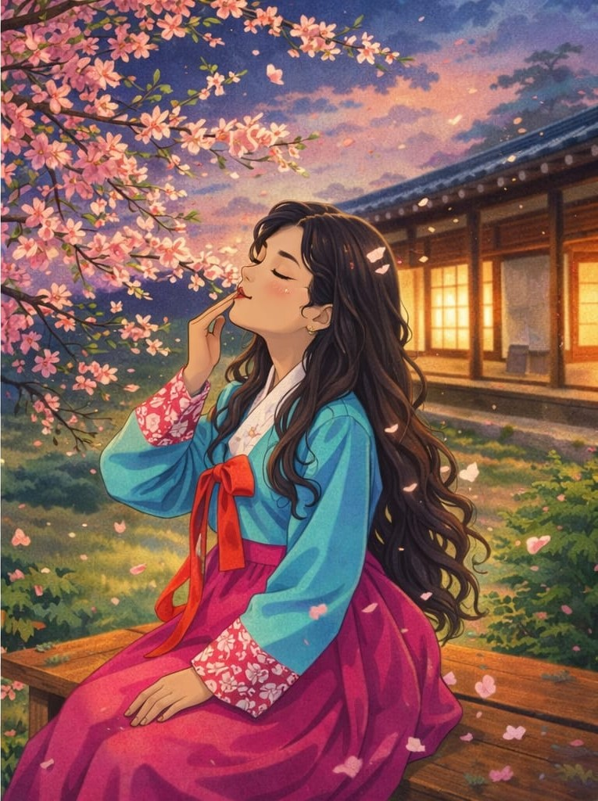
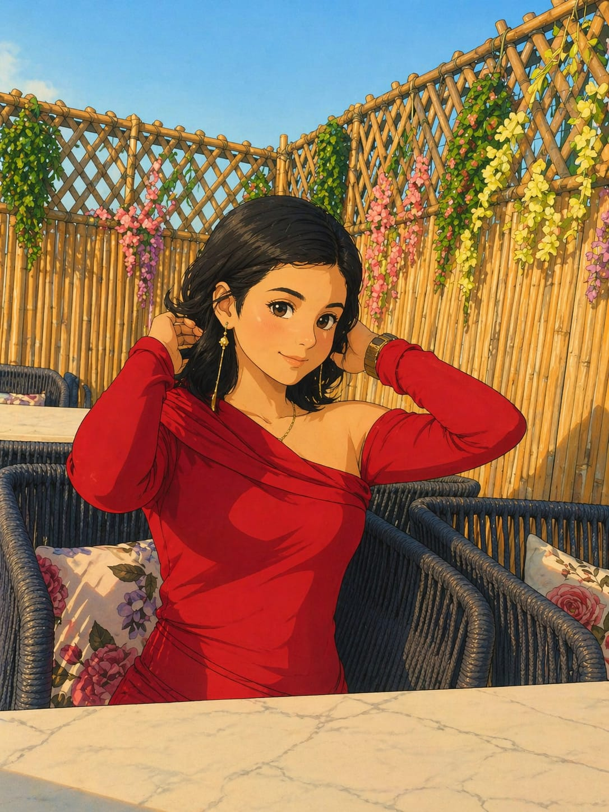
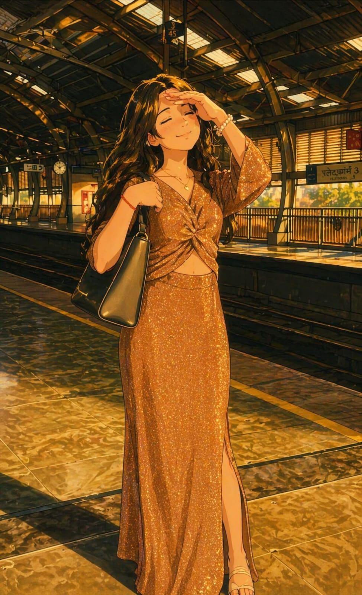

SOME STORIES
DON'T END...
THEY JUST WAIT FOR THE NEXT CHAPTER TO UNFOLD.
"Not every story gets the ending we once
imagined…
but that doesn’t mean it was never real, never meaningful, or never worth
everything we felt."
“Some stories don’t really end, they just stay unfinished somewhere between what we felt and what we never said, quietly waiting for the moment when two people finally find the courage to come back and complete what was once so real.”
"Some connections don’t fade away with time…
they
just stay hidden somewhere deep, waiting for one moment of courage to come alive again."
OUR STORY
ウリアイ · OUR JOURNEY
First Meeting
Wow she's very cutee mann
Getting Close
Ek apna pann lagne lage
Best Moments
All these 9 months are my favourite...
Drift
Maine bht galtiya kari...
Hmm soo okay time to just go back into the time to
think about the most beautiful time and memory I had....
starting upto how I adore you so from the day 1 of
the college shyd yeh baat maine kabhi na share kari ho
from the very first day of clg I just seen you and
thought wow shes very cutee mann
but thik hai I wont lie us time par mereko kuch
feelings nhi thi
but jaise jaise time badha tera sath ek apna pann
lagne lage
ek comfortable level create hogaya jo kisi ke sath
nhi hua tha
after that shivansh wala incident I genuinely don't
know ki mereko itni strong feelings kaise aayi
but thik mereko aagayi and I just fall in love with
you....
it was really love a pure love which doesn't expect
anything
at that time maine kabhi expect nhi kiya ki tu bhi
mereko same way mai like kare
I was just okay in adoring you quietly
I don't know na at that time ki relationship mai
aakar tereko adore karna will be more fascinating than dur se adore
karna
it was just awesome all these 9 months are my
favourite one...
haa thik hai I accept maine bht galtiya kari but
insaan hi toh galtiya karta hai...
galtiyo se hi toh hum seekhte hai life ke
lessons...
humari stry toh kaafi lambi hai the night can end
but our stry will not end
and i genuinely wanted ki we should create not only
a 9 month stry but a stry of 9 years and more...AMEN


"We didn’t lose each other in one moment…
we slowly
drifted apart through silence, misunderstandings, and things we never said when we should have."
“I never realized that silence could be this loud, that the absence of one person could fill every corner of the heart with memories, questions, and all the things we never got the chance to say.”

WHAT I REALIZED
Okayy, so here I am going to write about what I realized really...
Dekh, yeh separation period mere liye bhi aur tere liye bhi dono ke liye sabse toughest time tha.
Dono ne bahut saare aise changes face kiye jo shayad kabhi expect bhi nahi kare the...
Maine toh personally kabhi nahi socha tha ki mai kisi therapist ko visit karunga,
But anyways, I realized a lot of things in this period.
And the main thing I realized is—
"KUCH BHI HO, I JUST WANT YOU IN MY LIFE BACK. NOT AS A FRIEND, BUT AGAIN AS MY GIRLFRIEND."
I know some will say ki bhai tu toh apni self respect nahi rakh raha, yeh woh...
But genuinely, I don't give a damn fuck to all these.
I don't even care about my self respect... I just want you.
Likhte huye bhi rona aa raha hai... but thik hai.
All these things doesn't mean to create any pressure on you.
"And maybe that’s what hurts the most…
not the fact
that it ended, but the feeling that we could have made it work if we just tried a little
harder."
REFLECTION
Hmm so yeah jab main honestly apne aap ko dekhta hoon na toh realize hota hai ki main aur better ho sakta tha...
Main feel toh karta tha sab kuch par har baar usse sahi tarah se dikha nahi paaya aur shayad wahi sabse badi kami thi.
Kabhi kabhi main chup reh gaya jab mujhe bolna chahiye tha aur kabhi main samajh nahi paaya jab mujhe sirf feel karna chahiye tha.
Shayad main thoda zyada patience rakh sakta tha, thoda zyada effort daal sakta tha, thoda zyada clarity laa sakta tha.
Aur haan, main yeh maanta hoon ki har situation mein main perfect react nahi kar paaya... par uss time jo samajh thi main ussi hisaab se chal raha tha.
Aaj lagta hai ki agar main thoda aur ruk jata, thoda aur sun leta, thoda aur clearly baat kar leta toh shayad cheezein itni complicated nahi hoti.
Par shayad life isi tarah sikhaati hai... pehle feel karwaati hai phir samjhaati hai.
Aur jo maine seekha hai na woh yeh hai ki kisi ko lose karna hi zaruri nahi hota samajhne ke liye... par kabhi kabhi hum late samajhte hain.
Bas ek hi regret rehta hai andar se ki kaash uss time main thoda aur better version hota apna.
Par ek cheez aaj bhi clear hai ki jo feel tha woh pure tha, aur shayad isi liye aaj bhi itna deeply yaad aata hai...
"Time didn’t erase what we had…
it only made me
realize how rare, how genuine, and how irreplaceable it actually was."
WHAT I FEEL NOW
Hmm so yeah ab jab feelings ki baat aati hai na toh sach yeh hai ki main aage badhne ki koshish karta raha par dil wahi atka hua tha.
Maine bahut baar khud ko samjhaya ki shayad sab khatam ho gaya hai... par jitni baar main aage badhne ki sochta hoon utni baar realize hota hai ki jo feel hai woh abhi bhi wahi hai, bas chup sa ho gaya hai.
Main kisi aur ko replace karne ke idea se kabhi comfortable nahi hua kyuki jo connection tha woh normal nahi tha, woh alag tha... aur woh mujhe aaj bhi feel hota hai.
Aur main yeh bhi samajh gaya hoon ki sirf feel karna enough nahi hota relationship ko chalane ke liye... usme understanding chahiye, communication chahiye aur ek calm space chahiye jahan dono safe feel kare.
Agar kabhi tu wapas aane ka sochti hai na toh main yeh promise nahi karunga ki kabhi problem nahi hogi... par yeh zaroor keh sakta hoon ki main har situation ko better handle karne ki puri koshish karunga.
Main sununga, samajhne ki koshish karunga aur jo feel hoga usse clearly bolunga taaki woh gap kabhi create hi na ho jo pehle hua tha.
Aur agar tujhe relationship se dar lag raha hai na toh main bas itna bolna chahta hoon ki is baar sab kuch dheere hoga... bina pressure ke, bina expectations ke, bas ek simple safe space jahan tu comfortable feel kare.
Main prove karne ki koshish karunga ki cheezein healthy bhi ho sakti hain, calm bhi ho sakti hain aur bina unnecessary fights ke bhi chal sakti hain jab dono log honestly try karte hain.
Main tujhe force nahi kar raha bas itna keh raha hoon ki agar kabhi tere dil mein bhi thoda sa space ho iske liye toh main yahan hoon is baar better samajh ke saath.
Kyuki sach yeh hai ki jo tha woh mere liye aaj bhi important hai aur shayad isi liye main ab bhi yeh sab feel karta hoon.
I LOVE YOU SRISHTI

"I tried convincing myself that it didn’t matter
anymore…
but some memories don’t fade, and some people never really leave your heart."
"Because no matter how far life takes us…
there are
always pieces of us that stay unfinished, waiting for closure… or maybe, another chance."
If you're still reading this… maybe it still means something.
"Can we try again?"
"Only if you feel the same."
"I still wear the watch."